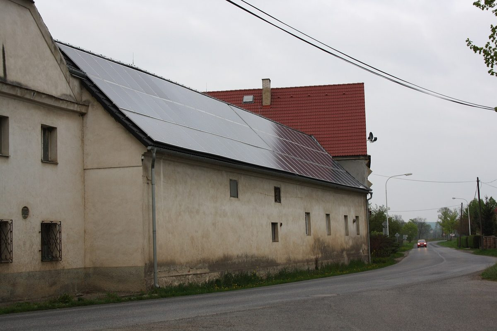

체코, 에너지공동체 전용 보조 공모 10억→1억 코루나로 줄이고 신청 기한 올해 말로 당겨…공동체 연합 "예고 없는 마감은 해법 아냐"

국가환경기금 'KOMUNERG', 앞서 38억에서 10억 코루나로 한 차례 삭감…2027년 신청 준비하던 공동체들 자기 돈 넣은 사업 막혀, 직접 소비 60%·예약 용량 30% 조건 고친 새 공모 요구
체코 국가환경기금(SFŽP)이 에너지공동체 전용 보조 공모 'KOMUNERG'의 신청 기한을 2026년 말로 앞당기고 배정액을 10억 코루나에서 1억 코루나로 줄였다고 체코 공동체에너지연합(UKEN)이 29일 밝혔다. 연말을 석 달 앞두고 예고 없이 나온 조치로, 정부는 앞서 이 공모의 배정액을 처음 38억 코루나에서 10억 코루나로 한 차례 줄인 바 있다. 2026년 초 문을 연 KOMUNERG는 지자체·가정·기업이 함께 꾸리는 법정 비영리 조직인 에너지공동체가 공동 재생에너지 설비와 그 운영에 투자하도록 돕는 사업으로, EU 현대화기금을 재원으로 삼는다. 공모 조건 공고가 늦어진 탓에 공동체들은 본 신청을 2027년에 하려고 준비해 왔으며, 공동체 ENERKOM Růže는 약 700만 코루나 규모 사업 2건에 이미 자기 돈을 넣었지만 연말까지 준비를 마치기 어렵다고 우려했고, 브루모비체 일대의 에너지협동조합 호타르는 계통 여유가 없는 지역이라 설비용량의 30% 이상 예약 용량을 요구하는 조건 때문에 아예 신청할 수 없다고 밝혔다. UKEN의 온드르제이 파셰크 보조금 실무그룹장은 "예고 없는 공모 마감은 해법이 아니다"라며, 정부가 이미 승인한 10억 코루나로 2027년 초 새 공모를 열고 공동체 안 직접 소비 60% 의무와 계통 예약 용량 요건, 낡은 지역 제한을 고치라고 요구했다. 이번 축소에 대한 SFŽP 쪽 설명은 나오지 않았다.
시민에너지 관점
처음 38억 코루나였던 공동체 전용 재원이 두 번의 삭감 끝에 38분의 1로 줄고 기한까지 석 달 앞으로 당겨진 이번 일은, 지원 규모보다 지원의 예측 가능성이 공동체 에너지의 성패를 가른다는 점을 보여 준다. 공공 지원이 줄면 시장에 맡기면 된다는 반론도 있지만, 지자체와 주민이 꾸리는 비영리 공동체는 사전 준비에 자기 돈을 먼저 넣고 의회 의결을 거쳐야 해서 기한이 갑자기 바뀌면 가장 먼저 밀려난다. 직접 소비 60%·예약 용량 30% 같은 조건이 계통 여유 없는 농촌 협동조합의 신청을 막았다는 지적도, 지원 규칙이 지역 주민의 사정에 맞춰 짜여야 시민 소유가 넓어진다는 점을 일깨운다. 국내 햇빛소득마을과 공공부지 태양광 지원도 여러 해에 걸친 예산과 기한을 미리 못 박고 계통 포화 지역의 주민 사업이 빠지지 않는 조건을 함께 내놔야 하며, 마을과 협동조합은 그 약속을 제도로 요구해야 한다.
출처: Obnovitelně.cz 2026-10-29 편집부(본문 작성: 체코 공동체에너지연합 UKEN) 원문 보기
チェコ、エネルギー共同体向け補助公募を10億→1億コルナに削減、申請期限も今年末に前倒し…共同体連合「予告なしの締め切りは解決策ではない」
国家環境基金の「KOMUNERG」、すでに38億から10億コルナへ一度削減…2027年の申請を準備していた共同体は自己資金を投じた事業が行き詰まり、直接消費60%・予約容量30%の条件を改めた新公募を要求
チェコの国家環境基金（SFŽP）が、エネルギー共同体向けの補助公募「KOMUNERG」の申請期限を2026年末に前倒しし、配分額を10億コルナから1億コルナに減らしたと、チェコ共同体エネルギー連合（UKEN）が29日明らかにした。年末まで3か月という時期に予告なく出された措置で、政府はこれに先立ち、この公募の配分額を当初の38億コルナから10億コルナへ一度減らしている。2026年初めに始まったKOMUNERGは、自治体・家庭・企業がともに運営する法定の非営利組織であるエネルギー共同体が、共同の再生可能エネルギー設備とその運用に投資できるよう支援する事業で、EUの近代化基金を財源とする。公募条件の公告が遅れたため、共同体は本申請を2027年に行う準備を進めており、共同体ENERKOM Růžeは約700万コルナ規模の事業2件にすでに自己資金を投じたが年末までに準備を終えるのは難しいと懸念し、ブルモビツェ周辺のエネルギー協同組合ホタシュは、系統に余裕のない地域のため設備容量の30%以上の予約容量を求める条件によって申請自体ができないと訴えた。UKENのオンドジェイ・パシェク補助金作業部会長は「予告なしに公募を締め切ることは解決策ではない」として、政府がすでに承認した10億コルナで2027年初めに新たな公募を開き、共同体内の直接消費60%義務、系統の予約容量要件、古い地域制限を改めるよう求めた。今回の縮小についてSFŽP側の説明は出ていない。
市民エネルギーの視点
当初38億コルナだった共同体向けの財源が2度の削減で38分の1に縮み、期限まで3か月前倒しされた今回の件は、支援の規模よりも支援の予見可能性が共同体エネルギーの成否を分けることを示している。公的支援が減るなら市場に任せればよいとの反論もあるが、自治体と住民が運営する非営利の共同体は、事前準備に先に自己資金を投じ、議会の議決を経なければならないため、期限が急に変われば真っ先に押し出される。直接消費60%・予約容量30%といった条件が系統に余裕のない農村の協同組合の申請を阻んだという指摘も、支援の規則が地域住民の事情に合わせて作られてこそ市民所有が広がることを思い起こさせる。韓国の「陽光所得村」や公有地太陽光への支援も、複数年にわたる予算と期限をあらかじめ定め、系統が飽和した地域の住民事業が外れない条件を併せて示すべきであり、村と協同組合はその約束を制度として求めていかなければならない。
出典: Obnovitelně.cz 2026-10-29 編集部（本文執筆：チェコ共同体エネルギー連合 UKEN） 原文を読む
捷克将能源社区专项补助招标从10亿克朗削减至1亿克朗，申请截止提前到今年底…社区联盟：“不预告就截止不是办法”
国家环境基金“KOMUNERG”此前已从38亿克朗削减至10亿克朗…原计划2027年申请的社区已投入自有资金的项目受阻，要求修改直接消费60%、预留容量30%等条件后重开招标
捷克社区能源联盟（UKEN）29日表示，捷克国家环境基金（SFŽP）将能源社区专项补助招标“KOMUNERG”的申请截止日期提前至2026年底，并把拨款额从10亿克朗削减至1亿克朗。这一措施在距年底仅剩三个月时未经预告推出，而政府此前已将该招标的拨款额从最初的38亿克朗削减至10亿克朗。KOMUNERG于2026年初开放，旨在帮助由地方政府、家庭和企业共同组成的法定非营利组织——能源社区——投资共同的可再生能源设施及其运营，资金来自欧盟现代化基金。由于招标条件公告迟迟未出，各社区原本准备在2027年正式申请：社区ENERKOM Růže已为两个合计约700万克朗的项目投入自有资金，但担心年底前无法完成准备；布鲁莫维采一带的能源合作社霍塔日则表示，当地电网没有余量，而招标要求预留容量不低于装机容量的30%，导致根本无法申请。UKEN补助工作组负责人翁德热·帕舍克表示“不预告就关闭招标不是办法”，要求用政府已批准的10亿克朗在2027年初开启新一轮招标，并修改社区内直接消费60%的义务、电网预留容量要求和过时的地域限制。对于此次缩减，SFŽP方面尚未作出说明。
市民能源视角
最初38亿克朗的社区专项资金经过两次削减只剩38分之一，截止期限还提前了三个月，这说明决定社区能源成败的，与其说是支持规模，不如说是支持的可预期性。有人认为公共支持减少就交给市场，但由地方政府和居民运营的非营利社区必须先为前期准备投入自有资金，还要经过议会决议，一旦期限突变，它们首先被挤出局。直接消费60%、预留容量30%等条件把电网没有余量的农村合作社挡在门外，这也提醒我们，只有按照当地居民的实际情况设计支持规则，市民所有才能扩大。韩国的“阳光收入村”和公共用地光伏支持，也应事先确定跨年度的预算和期限，并同时提出不让电网饱和地区居民项目被排除的条件，村庄和合作社则应把这些承诺作为制度来争取。
来源: Obnovitelně.cz 2026-10-29 编辑部（正文撰写：捷克社区能源联盟 UKEN） 查看原文
Czech Republic cuts energy community grant call from CZK 1 billion to CZK 100 million and pulls deadline forward to year-end; community union says "closing without warning is no solution"
State Environmental Fund's KOMUNERG had already been cut from CZK 3.8 billion to CZK 1 billion; communities preparing to apply in 2027 see self-funded projects stall, demand a new call with revised 60% direct-consumption and 30% reserved-capacity rules
The Czech State Environmental Fund (SFŽP) has brought forward the application deadline for KOMUNERG, a grant call dedicated to energy communities, to the end of 2026 and cut its allocation from CZK 1 billion to CZK 100 million, the Czech Union of Community Energy (UKEN) said on the 29th. The move came without warning three months before the end of the year, after the government had already reduced the call's allocation once, from an original CZK 3.8 billion to CZK 1 billion. Opened at the start of 2026 and funded by the EU Modernisation Fund, KOMUNERG helps energy communities, legally non-profit bodies that bring together municipalities, households and businesses, invest in shared renewable generation and its management. Because the call's conditions were published late, communities had been preparing to submit their main applications in 2027: the community ENERKOM Růže has already put its own money into two projects worth about CZK 7 million in total but fears it cannot finish preparing them by year-end, while the Hotař energy cooperative around Brumovice says it cannot apply at all, because the local grid has no spare capacity and the call requires reserved capacity of at least 30% of installed output. Ondřej Pašek, head of UKEN's grants working group, said "closing the call without warning is no solution" and called for a new call in early 2027 using the CZK 1 billion the government has already approved, with fixes to the 60% direct-consumption obligation within communities, the grid reserved-capacity requirement and outdated territorial limits. No explanation from the SFŽP for the cut has been given.
Citizen Energy View
A fund for communities that started at CZK 3.8 billion has shrunk to one thirty-eighth of that after two cuts, and its deadline has been pulled forward by three months, showing that predictability of support matters more than its size for the success of community energy. Some argue that if public support shrinks the market can take over, but non-profit communities run by municipalities and residents must spend their own money on preparation first and pass council votes, so they are the first to be pushed out when deadlines suddenly change. The complaint that conditions such as 60% direct consumption and 30% reserved capacity shut out rural cooperatives in grid-constrained areas is also a reminder that citizen ownership only grows when support rules are designed around local circumstances. Support for Korea's Sunlight Income Villages and solar on public land should likewise fix multi-year budgets and deadlines in advance and set conditions that do not exclude residents' projects in grid-saturated areas, and villages and cooperatives should demand those commitments in law.
Source: Obnovitelně.cz 2026-10-29 Editorial staff (text by the Czech Union of Community Energy, UKEN) Read the original